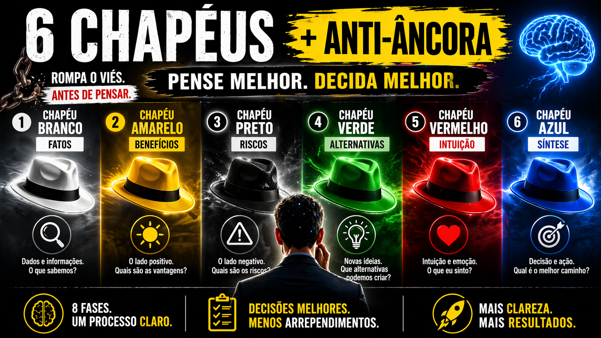
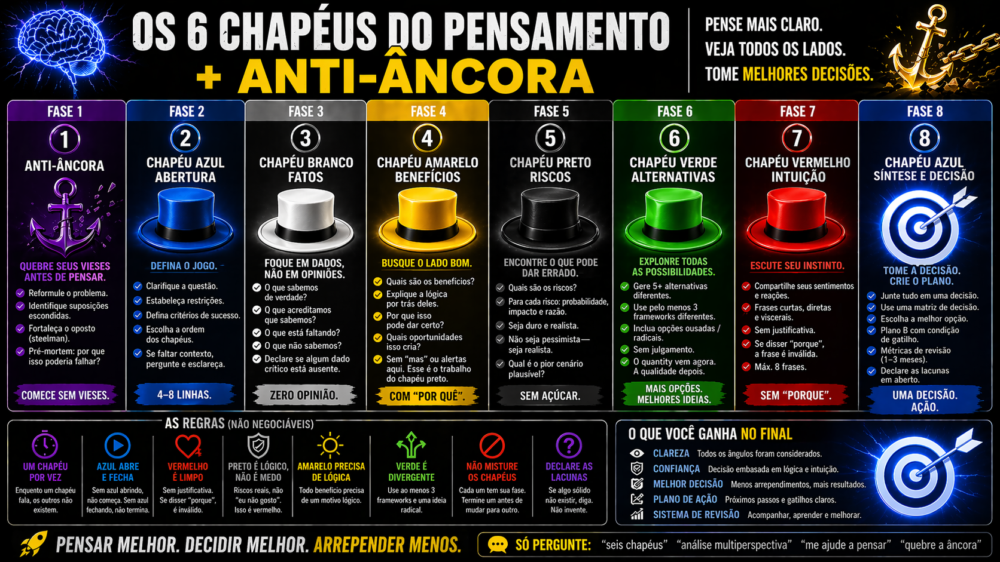

Aprenda a pensar melhor separando os modos: fatos, benefícios, riscos, alternativas, intuição — um de cada vez, sem misturar.
É o método clássico de Edward de Bono, mas com a camada que faltava: quebrar a âncora cognitiva ANTES de começar. E você ainda aprende a montar isso como uma skill para o Claude.
Você tem 6 formas de pensar. Mas precisa de 8 passos para usar bem. O azul aparece 2 vezes — abre e fecha o processo.
Porque o Azul aparece duas vezes: abre o processo definindo a pergunta, e fecha sintetizando em UMA recomendação com Plano B. E antes de tudo, a Fase 0 (Anti-Âncora) quebra o seu viés inicial — sem isso, você vai só confirmar o que já tinha decidido.
Em algumas variantes, a ordem muda: no conflito de pessoas, o Vermelho vem logo após o Azul de abertura (emoção sai antes, senão bloqueia a razão); no pre-mortem, o Preto vem cedo. Mas o Azul sempre abre e fecha — é o maestro.

Quase ninguém pensa com disciplina. Nós misturamos medo, fato, ideia e crítica na mesma frase — e tomamos decisões ruins achando que refletimos muito.
Os 6 modos de pensar de De Bono, sem abstração. O que cada chapéu faz, o que não faz e por que a ordem importa.
Como invocar a skill, que variante escolher, como ler a saída e aplicar em decisões reais — feature, conflito, pre-mortem.
Como a skill foi montada, regra por regra. Para você poder criar a sua — uma versão customizada para seu domínio.
Três públicos, três objetivos. Pode seguir na ordem (recomendado) ou pular direto para a que te interessa.
Entenda por que o método funciona. Cada chapéu, cada regra, o anti-âncora — ilustrado do dia a dia.
Como usar no dia a dia. Invocação, variantes, 10 marcos do Verde, anti-padrões e 3 casos completos.
Como a skill é montada por dentro. Anatomia, description, regras como código e criação de variantes.
Começa quebrando a âncora. Passa pelos 6 chapéus. Termina com síntese decisiva.
0 Fase 0 + 1+7 Azul (2×) + 2-6 os 5 demais chapéus = 8 passos no total.
Em vez de travar entre medo, excitação e dúvida, você separa: fatos → bom → ruim → alternativas → intuição → síntese.
Na variante de conflito, o Vermelho vem primeiro — emoção sai antes da lógica, senão ela trava a lógica.
O Chapéu Verde usa 10 marcos divergentes (Inversão, TRIZ, Eliminação...) para você sair do piloto automático.
A Fase 0 quebra a âncora ANTES do pensamento começar. Reformula, testa suposição, faz steel-man, pre-mortem.
UMA recomendação + Plano B com gatilho + métricas para revisar em 1-3 meses. Nada de "depende do seu caso".
Trilha 3 ensina a anatomia do SKILL.md para você criar variantes — "três chapéus para decisões pessoais", por exemplo.
Comece pela Trilha 1 (O Método). São 6 módulos curtos e ilustrados — você entende o método antes de aprender a usar e a construir.
Começar agora →As 8 fases, as regras não-negociáveis e os gatilhos — tudo em um só quadro. Salva e consulta sempre que for aplicar.
